Designed for non-technical users, E-commerce GMs, and absolute beginners.
Metaphor: Building a house — first we pour the concrete foundation (Git), then hire the site foreman (Node.js), and finally bring in the master architect (Claude) to start designing your project.
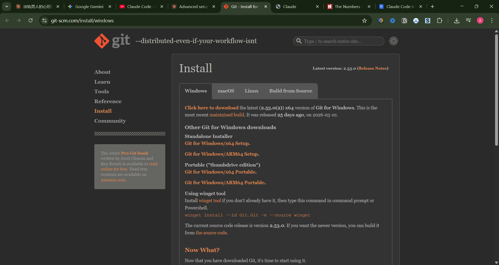
Figure 1: Download Git — pouring the concrete foundation every project stands on.
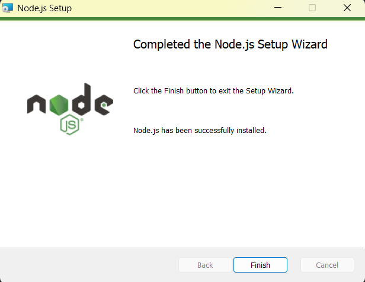
Figure 2: Node.js (the Site Foreman) is ready — the crew can now receive and execute instructions.
Open Git Bash, paste the following and hit Enter:
npm install -g @anthropic-ai/claude-code
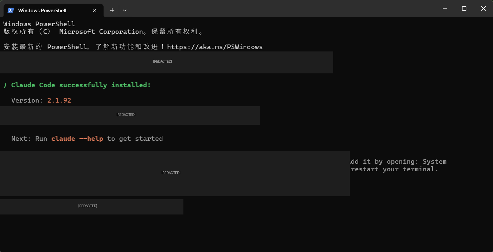
Figure 3: ⭐ The architect has arrived! Green text means Claude is installed on-site. Note the Location path — that's the architect's office address, needed in the next step.
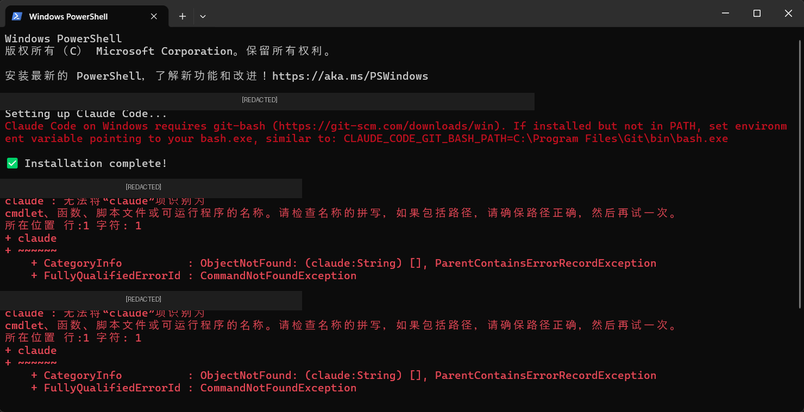
Figure 4: The building site doesn't know where the architect's office is — PATH not configured.
Path > New > Paste the install path (e.g., C:\Users\YourName\.local\bin) > OK. Critical: Close and reopen the terminal window afterward — like handing the crew an updated site map!
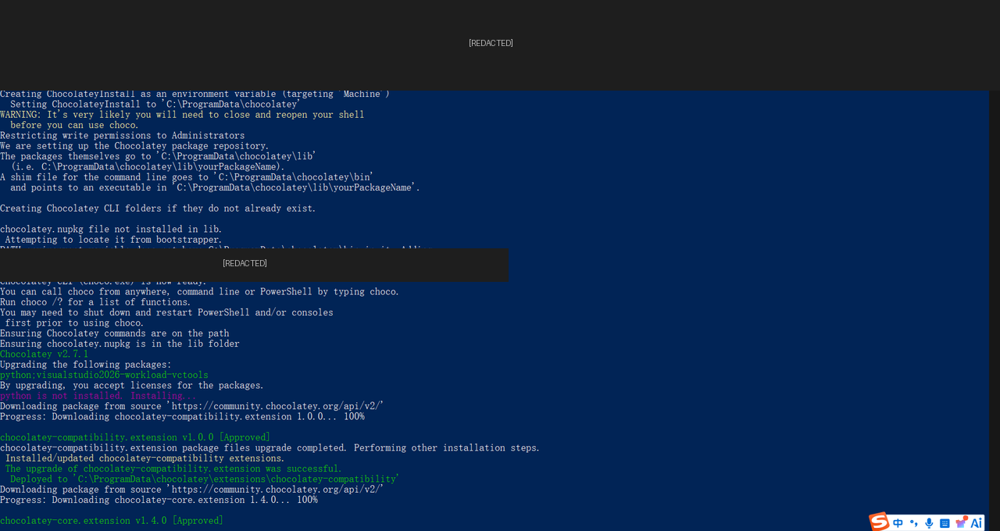
Figure 5: Underground plumbing installation — heavy background tools being set up.
RequestCanceled, just click X to close it. Like skipping fancy underfloor heating — the house still stands perfectly without it.
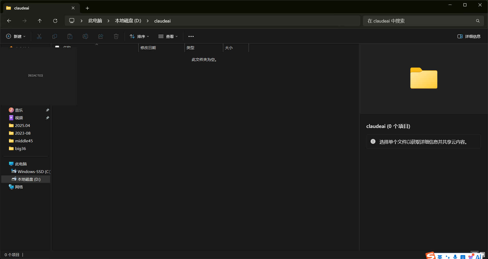
Figure 6: Create an empty folder on D: drive (e.g., D:\claudeai) — like staking out a clean empty plot of land. Right-click inside and select "Open in Terminal".
Type claude in your new terminal. You will see these two prompts:
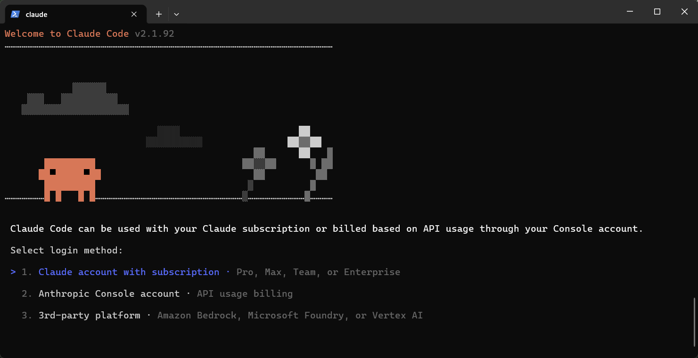
Figure 7: Choose your architect's drafting table style. Press '1' for Dark mode — easiest on the eyes for long design sessions.
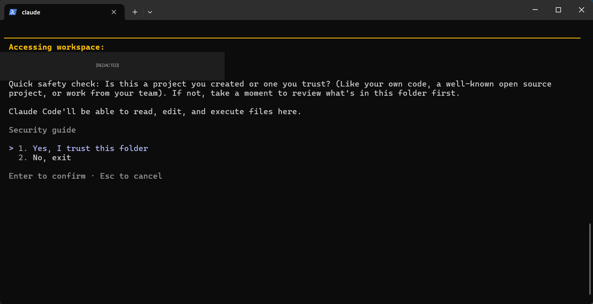
Figure 8: Site safety inspection. Since this is the clean empty plot we just created on D:, confidently press Enter to select "Yes, I trust this folder".
Final step: You'll be given a URL to log in and authorize Claude. Make sure you have API credits — that's the budget that pays your master architect to work!
| Principle | ❌ Rookie Mistake | ✅ Smart Owner Approach |
|---|---|---|
| Blueprints Must Be Specific | "Build me a house." (Too vague — the architect has no idea where to start.) | "Act as a senior architect. Design a 2-storey house: ground floor open-plan kitchen and living room with south-facing floor-to-ceiling windows. 3 bedrooms upstairs, master with en-suite. Off-white exterior walls." |
| Build Phase by Phase | Expecting the architect to deliver a fully furnished house in one day. | "Phase 1: draw the structural floor plan. Once I approve it, Phase 2: add the electrical and plumbing layout. Then Phase 3: interior design." |
| One Site at a Time | Asking Claude to redesign the garden immediately after finishing the bedroom blueprint. | Type /clear to wipe the drafting table clean between unrelated projects — prevents old plans bleeding into new ones. |
| Tool & Persona | Best For... | Target Audience |
|---|---|---|
|
Claude Code 👨🔧 On-site Contractor |
Building apps from scratch locally, editing local files, reading whole code folders. | GMs or beginners wanting to build actual software locally. |
|
Gemini AI (Me) 👔 Marketing Director |
Brainstorming livestream strategies, analyzing PDFs, real-time market research. | Management needing strategy, writing, and commercial insights. |
|
ChatGPT 💼 The General Consultant |
Explaining rules, translating supplier emails, debugging pasted code snippets. | General users for daily office tasks and learning. |
|
DeepSeek AI 🧮 Tactical Analyst |
Extreme logical reasoning, math, high-tier code generation at low cost. | Users needing strict logic or cost-effective API access. |
index.html. If your main file has any other name, visitors will see a blank page or a file listing instead of your guide.index.html file that auto-redirects to the guide — just upload it alongside everything else.
image_5b5c6f.png, etc.) must be uploaded into the same folder level as the HTML file. If you only upload the HTML, all images will appear broken on the live site.
claudecodeinstallguide (letters, numbers, and hyphens only).claudecodeinstallguide gives you the link:https://your-username.github.io/claudecodeinstallguide/
D:\claudeai folder, select all of these files:
index.htmlclaude_code_guide_v2.htmlimage_5b5c6f.png, etc.)README.md (optional — shows as a description on the repo page)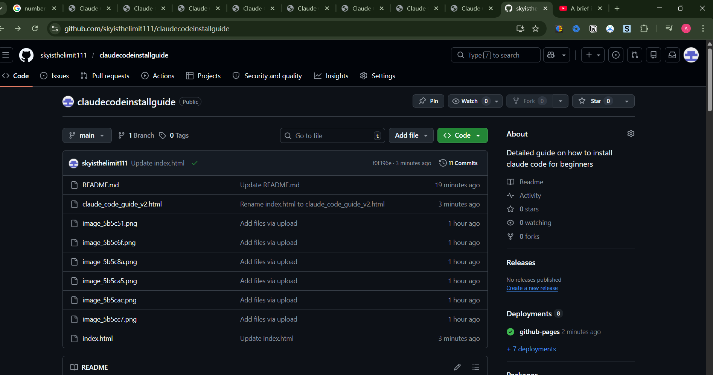
Figure 9: After uploading, your repository will show all your files listed. Once confirmed, click Commit changes to save everything to the cloud.
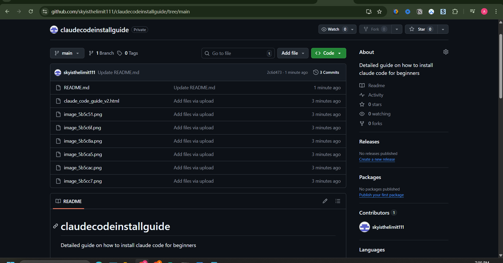
⚠️ Warning: If your repository shows Private, your friends cannot access the link. Make sure to set it to Public when creating it.
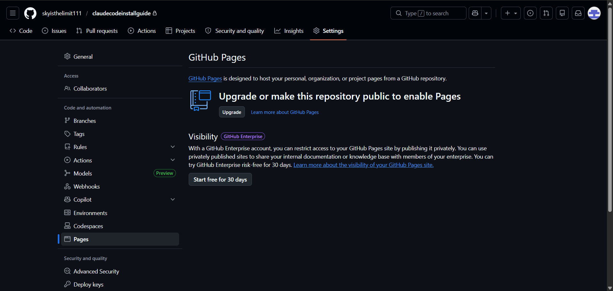
⚠️ If you see this upgrade screen, your repository is private and GitHub Pages cannot be enabled. Go back to repository Settings and change visibility to Public to fix this.
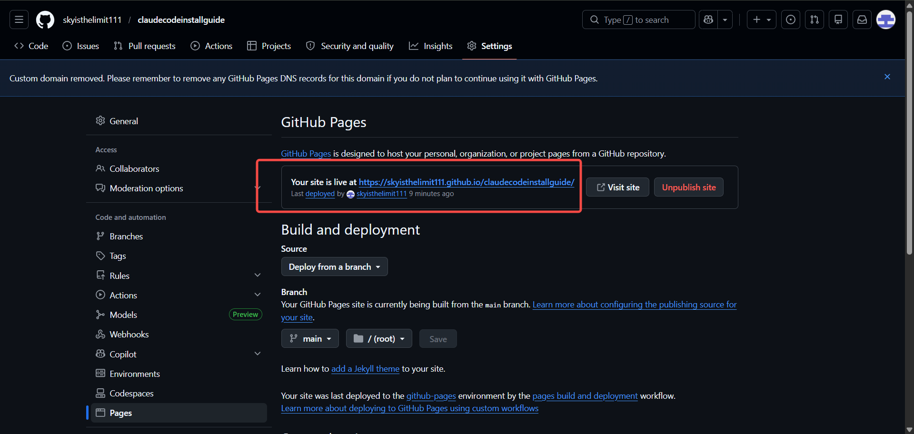
Figure 10: The blue box showing "Your site is live at https://skyisthelimit111.github.io/claudecodeinstallguide/" means your site is online. Copy that link and send it to your friends!
专为非技术背景、电商/直播从业者打造的"大白话"教程
逻辑比喻：盖房子要先打地基（Git），再找施工队长（Node.js），最后请总设计师（Claude）进驻工地开始画图。
打地基 (Git)： 到官网下载安装包。安装时务必勾选 "Add a Git Bash Profile"。没有地基，房子根本立不起来。
图1：认准这个页面下载 Git（为整栋楼打好混凝土地基）
引进施工队长 (Node.js)： 下载 LTS 长期稳定版。他负责调度所有工人和材料，缺了他没人能开工。一路狂点"Next"完成安装。
图2：看到这个 Finish 界面，说明施工队长 (Node.js) 已经到位，工地可以正式开工了。
按 Windows 键搜 Git Bash 打开黑窗口，右键粘贴并回车执行：
npm install -g @anthropic-ai/claude-code
图3：⭐ 开工大吉！看到绿色的 "Claude Code successfully installed"，代表总设计师正式进驻工地！
(注意图中显示的 Location 路径，这是设计师的办公室地址，下一步要用到)。
图4：典型的"查无此人"报错。
Path 双击。C:\Users\你的名字\.local\bin 路径粘贴进去。claude 即可解决！图5：安装 Node.js 附加工具时弹出的底层安装界面。
RequestCanceled 报错，直接点击右上角 X 关掉即可。地下管道属于高级配置，不影响你使用核心的 Claude 建造功能！
图6：在 D 盘新建一个叫 claudeai 的空文件夹，就像圈出一块空地准备建房。双击进去后右键选择"在终端中打开"。
在刚才弹出的黑窗口输入 claude 回车，你会看到两个经典界面：
图7：选择设计师工作台风格。看到像素小怪物，按键盘数字 1 选默认暗黑模式（最护眼，适合长时间工作）。
图8：工地安全合规审查。设计师问你是否信任这块工地。由于这是我们在 D 盘刚圈出的干净空地，直接按回车选 Yes, I trust this folder。
🔑 最后一步： 回车后，它会弹出一个网页链接让你登录 Anthropic 账号授权。授权完成后，给账户充值 5 美元 API 额度，你的金牌总设计师就能正式开始为你画图建房了！
| 操作原则 | ❌ 新手错误做法 | ✅ 包工头正确做法 |
|---|---|---|
| 图纸要精准 | "给我盖栋房子。"（太笼统，设计师不知道从哪下手） | "扮演高级建筑师。帮我设计一栋两层小洋楼：一楼要开放式客餐厅，朝南落地窗。二楼三个卧室，主卧带独立卫生间。外墙用米白色涂料。" |
| 分阶段施工 | 指望设计师一天之内连地基带装修全部搞定。 | "第一步先画地基和结构图。我确认没问题后，第二步你再出水电布线图，第三步再做室内装修方案。" |
| 工地不混用 | 刚画完卧室设计图，突然让它去规划屋顶花园景观。 | 换任务前，在窗口输入 /clear 让它"清空图板"，或者换个新文件夹重新启动，避免新旧图纸混淆。 |
| 工具名称与定位 | 最适合的任务范围 | 适合的人群 |
|---|---|---|
|
Claude Code 👨🔧 驻场施工队长 |
直接在本地电脑干活，从零搭建完整网页，读取并修改一整个文件夹的代码。 | 想自己开发小工具、改网页的零基础老板或开发者。 |
|
Gemini AI (我) 👔 市场总监 / 军师 |
构思双十一直播全套策划案，分析超长商业报告，带有实时搜索信息的市场调研。 | 需要创意、文案、数据分析和商业谋划的管理层。 |
|
ChatGPT 💼 全能业务顾问 |
解释复杂的足球越位规则，写给老外的英文邮件，单段代码找错。 | 日常办公、学习、文案润色的所有人群。 |
|
DeepSeek AI 🧮 战术分析师 |
极致的数学逻辑推理，便宜且聪明的高阶单段代码生成。 | 注重性价比、需要严密逻辑推理的玩家。 |
index.html。如果你上传的文件叫其他名字（比如 claude_code_guide_v2.html），朋友打开你的链接只会看到一片空白或文件列表。index.html 文件（自动跳转到你的指南），直接上传它即可。
image_5b5c6f.png 等）必须和 HTML 文件一起上传，放在同一层级。claudecodeinstallguide（只能用英文字母、数字和横线）。claudecodeinstallguide，你的最终链接就是：https://你的用户名.github.io/claudecodeinstallguide/
D:\claudeai 文件夹，全选以下文件：
index.htmlclaude_code_guide_v2.htmlimage_5b5c6f.png 等）README.md（可选，显示在仓库首页的说明文字）图9：上传成功后，仓库文件列表会显示你所有已上传的文件。确认文件齐全后，点击 Commit changes 保存即完成。
⚠️ 注意：如果你的仓库显示 Private（私有），朋友将无法访问链接。必须在创建时选择 Public（公开）。
⚠️ 如果看到这个升级提示，说明你的仓库是私有的，GitHub Pages 无法启用。回到仓库设置把可见性改为 Public 即可解决。
图10：出现蓝色方框显示 "Your site is live at https://skyisthelimit111.github.io/claudecodeinstallguide/"，大功告成！复制这个链接发给朋友即可。